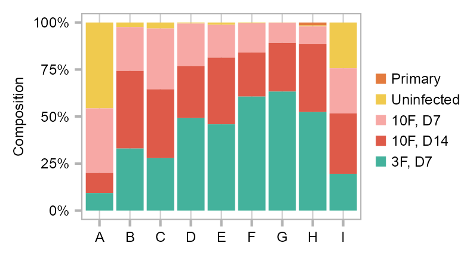

Global Reprogramming of Transcription by Reprogram-Seq
Jialei Duan ![]()
Abstract
Reprogram-Seq leverages organ-specific cell atlas data with single-cell perturbation and computational analysis to predict, evaluate, and optimize TF combinations that reprogram a cell type of interest.
Sys.time()[1] "2022-09-24 13:49:38 CDT"[1] "America/Chicago"Preparation
Functions
Load required packages.
`%+replace%` <- ggplot2::`%+replace%`Symbols
PROJECT_DIR <- file.path(
"/Users/jialei/Dropbox/Data/Projects/UTSW/Cellular_reprogramming",
"Cardiac_reprogramming/Notebooks"
)gene_symbols <- vroom::vroom(
file = file.path(
PROJECT_DIR, "data", "misc", "genes.tsv"
),
col_names = FALSE
)
gene_symbols <- setNames(object = gene_symbols$X2, nm = gene_symbols$X1)
gene_symbols |> head()ENSMUSG00000051951 ENSMUSG00000089699 ENSMUSG00000102343 ENSMUSG00000025900
"Xkr4" "Gm1992" "Gm37381" "Rp1"
ENSMUSG00000109048 ENSMUSG00000025902
"Rp1" "Sox17" length(gene_symbols)[1] 27999Matrix
matrix_readcount_use <- Matrix::sparseMatrix(
i = readRDS(
file.path(
PROJECT_DIR, "data/10x", "expr_readcount_raw_csc_indices.rds"
)
),
p = readRDS(
file.path(
PROJECT_DIR, "data/10x", "expr_readcount_raw_csc_indptr.rds"
)
),
x = readRDS(
file.path(
PROJECT_DIR, "data/10x", "expr_readcount_raw_csc_values.rds"
)
),
dims = readRDS(
file.path(
PROJECT_DIR, "data/10x", "expr_readcount_raw_csc_shape.rds"
)
),
dimnames = readRDS(
file.path(
PROJECT_DIR, "data/10x", "expr_readcount_raw_csc_dimnames.rds"
)
),
index1 = FALSE
)dim(matrix_readcount_use)[1] 27999 34564rownames(matrix_readcount_use) <- paste(
rownames(matrix_readcount_use),
gene_symbols[rownames(matrix_readcount_use)],
sep = "_"
)
matrix_readcount_use[1:5, 1:5] |>
as.matrix() |>
knitr::kable()| BL5_AAACCTGCACTACAGT | BL5_AAACCTGCAGTACACT | BL5_AAACCTGGTTCACGGC | BL5_AAACCTGGTTGCTCCT | BL5_AAACCTGTCCAACCAA | |
|---|---|---|---|---|---|
| ENSMUSG00000051951_Xkr4 | 0 | 0 | 0 | 0 | 0 |
| ENSMUSG00000089699_Gm1992 | 0 | 0 | 0 | 0 | 0 |
| ENSMUSG00000102343_Gm37381 | 0 | 0 | 0 | 0 | 0 |
| ENSMUSG00000025900_Rp1 | 0 | 0 | 0 | 0 | 0 |
| ENSMUSG00000109048_Rp1 | 0 | 0 | 0 | 0 | 0 |
CellDataSet
dim(monocle2_result$data)[1] 22693 11Check memory usage.
purrr::walk(
list(matrix_readcount_use, monocle2_result), \(x) {
print(object.size(x), units = "auto", standard = "SI")
}
)1.1 GB
3.5 MBTrajectory
x_column <- "x_monocle"
y_column <- "y_monocle"
GEOM_POINT_SIZE <- 0.5
EMBEDDING_TITLE_PREFIX <- "Monocle"
RASTERISED <- FALSEembedding <- monocle2_result$data |>
dplyr::mutate(
group = dplyr::case_when(
category %in% c("BL18") ~ "10F, D14",
category %in% c("BL19") ~ "3F, D7",
category %in% c("BL5", "BL6") ~ "Primary",
category %in% c("BL7") ~ "Uninfected",
category %in% c("BL8") ~ "10F, D7"
),
group = factor(
group,
levels = c(
"Primary", "Uninfected",
"10F, D7", "10F, D14", "3F, D7"
)
)
) |>
dplyr::rename(cell = sample_name)p_embedding_pseudotime <- plot_embedding(
data = embedding[, c(x_column, y_column)],
color = embedding$pseudotime,
label = glue::glue("{EMBEDDING_TITLE_PREFIX}; Pseudotime"),
color_legend = TRUE,
sort_values = TRUE
) +
theme_customized_embedding()
color_labels <- embedding |>
dplyr::group_by(state) |>
dplyr::summarise(
x = median(x_monocle),
y = median(y_monocle)
) |>
as.data.frame()
geom_segment_layer <- ggplot2::geom_segment(
ggplot2::aes_string(
x = "source_prin_graph_dim_1",
y = "source_prin_graph_dim_2",
xend = "target_prin_graph_dim_1",
yend = "target_prin_graph_dim_2"
),
data = monocle2_result$edge,
na.rm = TRUE,
color = "#2196F3",
linetype = "solid",
linewidth = .25
)Warning: `aes_string()` was deprecated in ggplot2 3.0.0. Please use tidy evaluation
ideoms with `aes()`layers <- list(
ggplot2::geom_point(
data = color_labels,
aes(x, y),
size = 2.0,
stroke = 0,
shape = 22,
fill = "#E29C36",
color = "#E29C36"
),
ggplot2::annotate(
geom = "text",
x = color_labels$x,
y = color_labels$y,
label = LETTERS[as.integer(color_labels$state)],
size = 1.5,
family = "Arial",
color = "black"
)
)
p_embedding_pseudotime <- p_embedding_pseudotime +
geom_segment_layer +
layersp_embedding_UMI <- plot_embedding(
data = embedding[, c(x_column, y_column)],
color = log10(Matrix::colSums(matrix_readcount_use[, embedding$cell])),
label = glue::glue("{EMBEDDING_TITLE_PREFIX}; UMI"),
color_legend = TRUE,
sort_values = FALSE,
shuffle_values = TRUE
) + theme_customized_embedding() +
geom_segment_layerp_embedding_backbone <- ggplot2::ggplot() +
ggplot2::facet_wrap(NA) +
geom_segment_layer +
theme_customized_embedding() +
scale_x_continuous(
limits = extract_ggplot_axis_ranges(p_embedding_pseudotime)[[1]]
) +
scale_y_continuous(
limits = extract_ggplot_axis_ranges(p_embedding_pseudotime)[[2]]
) +
layersp_embedding_MT <- plot_embedding(
data = embedding[, c(x_column, y_column)],
color = (colSums(matrix_readcount_use[
stringr::str_detect(
string = stringr::str_remove(
string = rownames(matrix_readcount_use),
pattern = "^E.+_"
),
pattern = "mt-"
),
]) / colSums(matrix_readcount_use))[embedding$cell],
label = glue::glue("{EMBEDDING_TITLE_PREFIX}; MT %"),
color_legend = TRUE,
sort_values = TRUE,
shuffle_values = FALSE
) + theme_customized_embedding() +
geom_segment_layerlist(
p_embedding_backbone,
p_embedding_pseudotime,
p_embedding_UMI,
p_embedding_MT
) |>
purrr::reduce(`+`) +
patchwork::plot_layout(ncol = 2, byrow = TRUE) +
patchwork::plot_annotation(
theme = ggplot2::theme(plot.margin = ggplot2::margin())
)Cellular state
embedding |>
dplyr::mutate(
num_umis = colSums(matrix_readcount_use[, cell]),
num_features = colSums(matrix_readcount_use[, cell] > 0),
) |>
dplyr::group_by(state) |>
dplyr::summarise(
num_cells = n(),
median_umis = median(num_umis),
median_features = median(num_features)
) |>
dplyr::mutate(
state = LETTERS[as.integer(state)]
) |>
gt::gt() |>
gt::data_color(
columns = c(median_umis),
colors = scales::col_numeric(
palette = c(
"green", "orange", "red"
),
domain = NULL
)
) |>
gt::summary_rows(
columns = c(state),
fns = list(
Count = ~ n()
),
decimals = 0
) |>
gt::summary_rows(
columns = c(median_umis:median_features),
fns = list(
Mean = ~ mean(.)
),
decimals = 0
) |>
gt::summary_rows(
columns = c(num_cells),
fns = list(
Sum = ~ sum(.)
),
decimals = 0
) |>
gt::tab_header(
title = gt::md("**Monocle**; Cellular state")
) |>
gt::tab_options(
table.width = gt::pct(80)
)| Monocle; Cellular state | ||||
| state | num_cells | median_umis | median_features | |
|---|---|---|---|---|
| A | 8106 | 14130.0 | 3644.5 | |
| B | 206 | 8527.0 | 2717.5 | |
| C | 538 | 12166.5 | 3373.0 | |
| D | 181 | 10272.0 | 2977.0 | |
| E | 2380 | 12835.5 | 3579.5 | |
| F | 965 | 7742.0 | 2573.0 | |
| G | 1577 | 5636.0 | 2067.0 | |
| H | 4064 | 10072.0 | 3018.5 | |
| I | 4676 | 4981.5 | 1572.0 | |
| Count | 9 | — | — | — |
| Mean | — | — | 9,596 | 2,836 |
| Sum | — | 22,693 | — | — |
purrr::map(levels(embedding$state), \(x) {
plot_embedding(
data = embedding[, c(x_column, y_column)],
color = as.integer(embedding$state == x) |> as.factor(),
label = glue::glue(
"{EMBEDDING_TITLE_PREFIX}; Pseudotime; ",
"State {LETTERS[as.integer(x)]}"
),
color_legend = FALSE,
sort_values = TRUE
) +
theme_customized_embedding() +
ggplot2::scale_color_manual(values = c("grey70", "salmon")) +
geom_segment_layer
}) |>
purrr::reduce(`+`) +
patchwork::plot_layout(ncol = 3, byrow = TRUE) +
patchwork::plot_annotation(
theme = ggplot2::theme(plot.margin = ggplot2::margin())
)Group
embedding |>
dplyr::mutate(
num_umis = colSums(matrix_readcount_use[, cell]),
num_features = colSums(matrix_readcount_use[, cell] > 0),
) |>
dplyr::group_by(group) |>
dplyr::summarise(
num_cells = n(),
median_umis = median(num_umis),
median_features = median(num_features)
) |>
dplyr::select(
group, dplyr::everything()
) |>
gt::gt() |>
gt::data_color(
columns = c(group),
colors = scales::col_factor(
palette = paletteer::paletteer_d(
n = 5, palette = "colorblindr::OkabeIto"
) |> as.character(),
domain = NULL
)
) |>
gt::data_color(
columns = c(median_umis),
colors = scales::col_numeric(
palette = c(
"green", "orange", "red"
),
domain = NULL
)
) |>
gt::summary_rows(
columns = c(group),
fns = list(
Count = ~ n()
),
decimals = 0
) |>
gt::summary_rows(
columns = c(median_umis:median_features),
fns = list(
Mean = ~ mean(.)
),
decimals = 0
) |>
gt::summary_rows(
columns = c(num_cells),
fns = list(
Sum = ~ sum(.)
),
decimals = 0
) |>
gt::tab_header(
title = gt::md("**Monocle**; Group")
)| Monocle; Group | ||||
| group | num_cells | median_umis | median_features | |
|---|---|---|---|---|
| Primary | 64 | 6244.5 | 2619.5 | |
| Uninfected | 4914 | 13713.0 | 3571.0 | |
| 10F, D7 | 5291 | 10534.0 | 3043.0 | |
| 10F, D14 | 5639 | 9724.0 | 2881.0 | |
| 3F, D7 | 6785 | 8805.0 | 2812.0 | |
| Count | 5 | — | — | — |
| Mean | — | — | 9,804 | 2,985 |
| Sum | — | 22,693 | — | — |
list(
plot_embedding(
data = embedding[, c(x_column, y_column)],
color = embedding$group,
label = glue::glue("{EMBEDDING_TITLE_PREFIX}; Pseudotime; Batch"),
color_legend = TRUE,
sort_values = FALSE,
shuffle_values = TRUE
) +
theme_customized_embedding() +
geom_segment_layer,
purrr::map(levels(embedding$group), \(x) {
plot_embedding(
data = embedding[, c(x_column, y_column)],
color = as.integer(embedding$group == x) |> as.factor(),
label = glue::glue("{EMBEDDING_TITLE_PREFIX}; Pseudotime; {x}"),
color_legend = FALSE,
sort_values = TRUE
) +
theme_customized_embedding() +
ggplot2::scale_color_manual(values = c("grey70", "salmon")) +
geom_segment_layer
})
) |>
purrr::reduce(`+`) +
patchwork::plot_layout(ncol = 2, byrow = TRUE) +
patchwork::plot_annotation(
theme = ggplot2::theme(plot.margin = ggplot2::margin())
)Composition
color_palette <- setNames(
object = c("#e37b3e", "#44b29c", "#de5a49", "#f7a8a5", "#f0ca4e"),
nm = c("Primary", "3F, D7", "10F, D14", "10F, D7", "Uninfected")
)
scales::show_col(color_palette, borders = NA)calc_group_composition(
data = embedding,
x = "state",
group = "group"
) |>
dplyr::mutate(
state = factor(
LETTERS[as.integer(state)]
)
) |>
plot_barplot(
x = "state",
y = "percentage",
z = "group",
legend_ncol = 1
) +
ggplot2::scale_fill_manual(
values = color_palette
)
calc_group_composition(
data = embedding,
x = "state",
group = "group"
) |>
dplyr::mutate(
group = factor(
group,
levels = c("Primary", "3F, D7", "10F, D14", "10F, D7", "Uninfected")
)
) |>
split(~state) |>
purrr::map(
\(x) {
x |>
dplyr::mutate(
label_position = cumsum(percentage) - percentage / 2
)
}
) |>
dplyr::bind_rows() |>
{
\(x) {
ggplot2::ggplot(
data = x,
aes(
x = "",
y = percentage,
fill = group
)
) +
geom_bar(width = 1, stat = "identity") +
coord_polar("y", start = 0) +
facet_wrap(
~state,
labeller = labeller(
state = setNames(
object = paste(
"State",
LETTERS[as.integer(levels(embedding$state))]
),
nm = levels(embedding$state)
)
)
) +
ggplot2::geom_text(
data = x,
ggplot2::aes(
y = label_position,
label = scales::percent(percentage, accuracy = 0.01)
), size = 5 / ggplot2::.pt
) +
ggplot2::scale_x_discrete(name = NULL) +
ggplot2::scale_y_continuous(name = NULL) +
ggplot2::scale_fill_manual(
name = NULL,
values = color_palette
) +
theme_customized_violin() %+replace%
ggplot2::theme(
axis.text.x = ggplot2::element_blank(),
axis.ticks = ggplot2::element_blank(),
legend.text = ggplot2::element_text(
size = 6,
margin = ggplot2::margin(
t = 0, r = 0,
b = 0, l = -1,
unit = "mm"
)
),
legend.key.size = ggplot2::unit(4, "mm")
)
}
}()Expression
FEATURES_SELECTED <- c(
"ENSMUSG00000016458_Wt1",
"ENSMUSG00000025105_Bnc1",
"ENSMUSG00000036098_Myrf",
"ENSMUSG00000042985_Upk3b"
)
purrr::map(FEATURES_SELECTED, \(x) {
selected_feature <- x
cat(selected_feature, "\n")
values <- log10(
calc_cpm(matrix_readcount_use[, embedding$cell])
[selected_feature, ] + 1
)
values[embedding$group != "3F, D7"] <- NA
plot_embedding(
data = embedding[, c(x_column, y_column)],
color = values,
label = glue::glue(
"{EMBEDDING_TITLE_PREFIX}; 3F, D7; ",
"{x |> stringr::str_remove(pattern = \"^E.+_\")}"
),
color_legend = TRUE,
sort_values = TRUE,
na_value = "grey70"
) +
theme_customized_embedding() +
geom_segment_layer
}) |>
# unlist(recursive = FALSE) |>
purrr::reduce(`+`) +
patchwork::plot_layout(ncol = 2, byrow = FALSE) +
patchwork::plot_annotation(
theme = ggplot2::theme(plot.margin = ggplot2::margin())
)ENSMUSG00000016458_Wt1
ENSMUSG00000025105_Bnc1
ENSMUSG00000036098_Myrf
ENSMUSG00000042985_Upk3b Enrichment of exogenous factors
features_selected_10 <- c(
"ENSMUSG00000026628_Atf3",
"ENSMUSG00000016458_Wt1",
"ENSMUSG00000025105_Bnc1",
"ENSMUSG00000051910_Sox6",
"ENSMUSG00000045680_Tcf21",
"ENSMUSG00000038193_Hand2",
"ENSMUSG00000031965_Tbx20",
"ENSMUSG00000032419_Tbx18",
"ENSMUSG00000005836_Gata6",
"ENSMUSG00000036098_Myrf"
)states_selected <- levels(embedding$state)
enriched_factors <- do.call(
rbind.data.frame,
lapply(states_selected, \(x) {
cells_1 <- embedding$cell[
embedding$state == x & embedding$category == "BL19"
]
cells_2 <- embedding$cell[embedding$category == "BL7"]
cat(x, length(cells_1), length(cells_2), "\n")
de_paired <- detect_de(
cell_group_a = cells_1,
cell_group_b = cells_2,
matrix_readcount = matrix_readcount_use,
matrix_cpm = calc_cpm(matrix_readcount_use),
only_enrichment = TRUE
) |>
dplyr::mutate(category = x) |>
tibble::rownames_to_column(var = "feature") |>
dplyr::filter(feature %in% features_selected_10)
})
) |>
dplyr::filter(category %in% states_selected) |>
dplyr::mutate(
category = factor(category,
levels = states_selected
),
symbol = stringr::str_remove(
string = feature,
pattern = "^.+_"
)
)1 758 4914
2 68 4914
3 150 4914
4 89 4914
5 1092 4914
6 585 4914
7 998 4914
8 2130 4914
9 915 4914 enriched_factors <- enriched_factors |>
dplyr::mutate(
pval_adj_log = ifelse(-log10(pval_adj) == Inf, 400, -log10(pval_adj))
)
ggplot2::ggplot() +
ggplot2::geom_abline(intercept = 0, slope = 1, linetype = 2) +
ggplot2::geom_point(
data = enriched_factors,
ggplot2::aes(positive_frac_b,
positive_frac_a,
size = pval_adj_log, # -log10(pval_adj),
color = log2_effect
),
alpha = .8,
stroke = 0, shape = 16
) +
ggplot2::facet_wrap(
~category,
ncol = 3,
labeller = ggplot2::labeller(
category = setNames(
object = paste("State", LETTERS[as.integer(states_selected)]),
nm = states_selected
)
)
) +
ggplot2::coord_fixed() +
ggplot2::scale_color_viridis_c(
name = expression(paste("Log"[2], " effect"))
) +
ggplot2::scale_size_continuous(
name = expression(paste("-log"[10], " (p-value)"))
) +
ggplot2::guides(
color = ggplot2::guide_colorbar(order = 1),
size = ggplot2::guide_legend(order = 2)
) +
ggplot2::scale_x_continuous(
name = "Expr (%, other reprogrammed cells)",
limits = c(0, 1), breaks = seq(0, 1, .2)
) +
ggplot2::scale_y_continuous(
name = "Expr (%, indicated cluster)",
limits = c(0, 1), breaks = seq(0, 1, .2)
) +
theme_customized_violin() %+replace%
ggplot2::theme(
legend.background = ggplot2::element_blank(),
legend.margin = ggplot2::margin(t = 0, r = 0, b = 0, l = 0, unit = "mm"),
legend.key.size = ggplot2::unit(2.5, "mm"),
legend.text = ggplot2::element_text(family = "Arial", size = 6),
legend.title = ggplot2::element_text(family = "Arial", size = 7),
legend.position = "bottom",
legend.box = "horizontal",
legend.box.background = ggplot2::element_blank()
) +
ggrepel::geom_text_repel(
data = enriched_factors,
ggplot2::aes(
positive_frac_b,
positive_frac_a,
label = symbol
),
#
size = 5 / ggplot2::.pt,
family = "Arial",
box.padding = .2,
point.padding = .2,
nudge_y = .15,
arrow = ggplot2::arrow(length = ggplot2::unit(.02, "npc")),
segment.color = "grey35",
color = "black"
)Exploring gene regulatory network
make_groups <- function(x, number_of_members) {
y <- seq_along(x)
chunks <- split(x, ceiling(y / number_of_members))
if (length(chunks[[length(chunks)]]) < number_of_members) {
chunks[[length(chunks) - 1]] <- c(
chunks[[length(chunks) - 1]], chunks[[length(chunks)]]
)
chunks[[length(chunks)]] <- NULL
}
return(chunks)
}monocle_states_selected <- c(
1, 2, 4, 6, 8
)
cells_selected_reprogrammed <- embedding |>
dplyr::filter(
state %in% monocle_states_selected,
!category %in% c(
"BL5",
"BL6",
"BL7"
)
) |>
dplyr::arrange(pseudotime) |>
dplyr::pull(cell)
cells_selected_reference <- embedding |>
dplyr::filter(
state %in% monocle_states_selected,
category %in% c("BL5", "BL6")
) |>
dplyr::arrange(pseudotime) |>
dplyr::pull(cell)
Map(length, list(cells_selected_reprogrammed, cells_selected_reference)) |>
unlist()[1] 9727 64NUM_CELLS_TO_MERGE <- 20
matrix_heatmap_reprogrammed <- purrr::map(
make_groups(cells_selected_reprogrammed, NUM_CELLS_TO_MERGE), \(x) {
Matrix::rowSums(matrix_readcount_use[, x])
}
) |>
purrr::reduce(cbind) |>
calc_cpm()
colnames(matrix_heatmap_reprogrammed) <- paste(
"metacell_reprogrammed",
1:ncol(matrix_heatmap_reprogrammed),
sep = "_"
)matrix_heatmap_reference <- purrr::map(
make_groups(cells_selected_reference, NUM_CELLS_TO_MERGE), \(x) {
Matrix::rowSums(matrix_readcount_use[, x])
}
) |>
purrr::reduce(cbind) |>
calc_cpm()
matrix_heatmap_reference <- purrr::map(
make_groups(cells_selected_reference, NUM_CELLS_TO_MERGE), \(x) {
Matrix::rowMeans(calc_cpm(matrix_readcount_use[, x]))
}
) |>
purrr::reduce(cbind)
colnames(matrix_heatmap_reference) <- paste(
"metacell_reference",
1:ncol(matrix_heatmap_reference),
sep = "_"
)Expression signature
matrix_kmeans <- log10(
matrix_heatmap_reprogrammed[features_selected_heatmap, ] + 1
)
pos_frac <- .2
features_selected_heatmap <- features_selected_heatmap[
rowMeans(matrix_kmeans > 0) >= pos_frac
]
matrix_kmeans <- matrix_kmeans[features_selected_heatmap, ]
matrix_kmeans <- t(scale(t(matrix_kmeans)))
kmeans_limits <- quantile(matrix_kmeans, c(0.05, 0.95))
matrix_kmeans[matrix_kmeans < kmeans_limits[1]] <- kmeans_limits[1]
matrix_kmeans[matrix_kmeans > kmeans_limits[2]] <- kmeans_limits[2]
NUM_CENTERS <- 6
SEED <- 20180706
set.seed(SEED)
kmeans_out <- kmeans(
matrix_kmeans,
NUM_CENTERS,
iter.max = 10,
nstart = 20
)# customize numbers of features per group
num_features_per_group <- kmeans_out$cluster |>
table() |>
tibble::enframe() |>
dplyr::rename(cluster = name, count = value) |>
mutate(
x = quantile(seq_len(dim(kmeans_out$centers)[2]), .5),
# y = 1,
y = 0.7,
label = paste("n =", count)
) |>
dplyr::mutate(
group = dplyr::case_when(
cluster == 6 ~ "Signature 1",
cluster == 1 ~ "Signature 2",
cluster == 3 ~ "Signature 3",
cluster == 5 ~ "Signature 4",
cluster == 2 ~ "Signature 5",
cluster == 4 ~ "Signature 6"
),
group = factor(group)
)
# customize x axis limits
x_breaks <- quantile(seq_len(dim(kmeans_out$centers)[2]), probs = seq(0, 1, 1))
# draw
p_kmeans <- kmeans_out$centers |>
t() |>
as.data.frame() |>
tibble::rownames_to_column(var = "metacell") |>
dplyr::mutate(x = 1:n()) |>
tidyr::pivot_longer(
-c("metacell", "x"),
names_to = "cluster",
values_to = "value"
) |>
dplyr::mutate(
group = dplyr::case_when(
cluster == 6 ~ "Signature 1",
cluster == 1 ~ "Signature 2",
cluster == 3 ~ "Signature 3",
cluster == 5 ~ "Signature 4",
cluster == 2 ~ "Signature 5",
cluster == 4 ~ "Signature 6"
),
group = factor(group)
) |>
ggplot2::ggplot(ggplot2::aes(x, value)) +
ggplot2::geom_line(size = .2) +
ggplot2::facet_wrap(
~group,
# scales = "free_y",
ncol = 3,
# strip.position = "left",
strip.position = "top",
# labeller = labeller(cluster = facet_labels)
) +
ggplot2::scale_x_continuous(
name = glue::glue(
"Scaled pseudotime (state ",
paste(LETTERS[as.integer(monocle_states_selected)],
collapse = ""
),
")"
),
breaks = x_breaks
) +
ggplot2::scale_y_continuous(
name = "Scaled expr (Z score)",
limits = c(-1.5, 1.5)
) +
ggplot2::geom_text(
data = num_features_per_group,
ggplot2::aes(x, y, label = label),
family = "Arial",
vjust = -.5,
size = 2
) +
ggplot2::labs(title = "Reprogrammed cells") +
theme_customized_violin(
panel_border_color = "black",
strip_background_fill = "grey80"
) %+replace%
ggplot2::theme(
axis.text.x = ggplot2::element_text(
family = "Arial",
angle = 90,
vjust = .5,
hjust = 1,
size = 6
),
plot.title = ggplot2::element_text(
family = "Arial",
size = 6,
# margin = margin(t = 0, r = 0, b = 0, l = 0, unit = "mm"))
hjust = .5
)
)g <- ggplot2::ggplot_gtable(ggplot2::ggplot_build(p_kmeans))
stript <- which(grepl("strip-t", g$layout$name))
colors_strip_background_fill <- ggthemes::tableau_color_pal(
"Tableau 10"
)(n = NUM_CENTERS)
colors_strip_background_fill <- c(
colors_strip_background_fill[4:6],
colors_strip_background_fill[1:3]
)
k <- 1
for (i in stript) {
j <- which(grepl("rect", g$grobs[[i]]$grobs[[1]]$childrenOrder))
g$grobs[[i]]$grobs[[1]]$children[[j]]$gp$fill <-
colors_strip_background_fill[k]
k <- k + 1
}
grid::grid.draw(g)Heatmap
feature_clusters <- c(6, 1, 3, 5, 2, 4)
features_selected_heatmap <- purrr::map(feature_clusters, \(x) {
names(kmeans_out$cluster)[kmeans_out$cluster == x]
}) |>
unlist()
features_selected_heatmap <- paste(
features_selected_heatmap, gene_symbols[features_selected_heatmap],
sep = "_"
)
# begin
matrix_heatmap <- cbind(
matrix_heatmap_reprogrammed,
matrix_heatmap_reference
)
matrix_heatmap <- matrix_heatmap[features_selected_heatmap, ]
matrix_heatmap <- matrix_heatmap[rowSums(matrix_heatmap) != 0, ]
matrix_heatmap <- log10(matrix_heatmap + 1)
matrix_heatmap <- t(scale(t(matrix_heatmap)))
heatmap_limits <- quantile(matrix_heatmap, c(0.05, 0.95))
matrix_heatmap[matrix_heatmap < heatmap_limits[1]] <- heatmap_limits[1]
matrix_heatmap[matrix_heatmap > heatmap_limits[2]] <- heatmap_limits[2]# get metacell states
metacell_annotation_reprogrammed <- purrr::map_int(
make_groups(cells_selected_reprogrammed, NUM_CELLS_TO_MERGE), \(x) {
x |>
as.data.frame() |>
`colnames<-`("cell") |>
dplyr::left_join(
embedding |>
dplyr::select(cell, state),
by = "cell"
) |>
dplyr::count(state) |>
dplyr::slice(1) |>
dplyr::pull(state)
}
)
# create labels for metacells
anno_labels_tbl_state_reprogrammed <- table(metacell_annotation_reprogrammed) |>
tibble::enframe(name = "group") |>
dplyr::mutate(
cum_sum = cumsum(value),
position = cum_sum - value / 2
)
anno_labels_state_reprogrammed <- rep(NA, ncol(matrix_heatmap_reprogrammed))
for (i in seq_len(nrow(anno_labels_tbl_state_reprogrammed))) {
anno_labels_state_reprogrammed[
anno_labels_tbl_state_reprogrammed[i, "position", drop = TRUE] # - 5
] <- LETTERS[
as.integer(anno_labels_tbl_state_reprogrammed[i, "group", drop = TRUE])
]
}# create heatmap column annotation
ha_column_reprogrammed <- ComplexHeatmap::HeatmapAnnotation(
#
state = ComplexHeatmap::anno_simple(
metacell_annotation_reprogrammed,
pch = anno_labels_state_reprogrammed,
col = setNames(
object = scales::hue_pal()(
n = length(unique(monocle2_result[[1]]$state))
),
nm = sort(unique(monocle2_result[[1]]$state))
),
which = "column",
pt_size = unit(5 / ggplot2::.pt, "mm"),
pt_gp = grid::gpar(
fontfamily = "Arial",
fontsize = 5
),
simple_anno_size = unit(1.5, "mm")
),
#
show_annotation_name = TRUE,
annotation_label = c(
"State"
),
annotation_name_gp = grid::gpar(fontfamily = "Arial", fontsize = 5),
annotation_name_side = "left"
)
# create heatmap row annotation; left
ha_left <- ComplexHeatmap::HeatmapAnnotation(
lineage = ComplexHeatmap::anno_simple(
setNames(
object = rep(
seq_len(NUM_CENTERS),
purrr::map_int(feature_clusters, \(x) {
sum(kmeans_out$cluster == x)
})
),
nm = features_selected_heatmap
),
col = setNames(
object = ggthemes::tableau_color_pal("Tableau 10")(n = NUM_CENTERS),
nm = seq_len(NUM_CENTERS)
),
which = "row",
pt_gp = grid::gpar(
fontfamily = "Arial",
fontsize = 5
),
simple_anno_size = unit(1.5, "mm")
),
which = "row",
show_annotation_name = FALSE,
annotation_label = c(
"Cluster"
),
annotation_name_gp = grid::gpar(fontfamily = "Arial", fontsize = 5)
)# map color
col_fun <- circlize::colorRamp2(
quantile(
c(
min(matrix_heatmap),
max(matrix_heatmap)
),
seq(0, 1, 0.1)
),
# viridis::plasma(11)
wesanderson::wes_palette("Zissou1", 11, type = "continuous")
)
RASTERISED <- FALSE
# create heatmap
ht_reprogrammed <- ComplexHeatmap::Heatmap(
matrix = matrix_heatmap[, colnames(matrix_heatmap_reprogrammed)] |>
as.matrix(),
rect_gp = grid::gpar(col = NA, lwd = 0),
col = col_fun,
#
row_title_gp = grid::gpar(fontfamily = "Arial", fontsize = 6),
row_title_rot = 0,
column_title_gp = grid::gpar(fontfamily = "Arial", fontsize = 6),
column_title_rot = 0,
#
cluster_rows = FALSE,
show_row_dend = FALSE,
cluster_columns = FALSE,
show_column_dend = FALSE,
#
show_row_names = FALSE,
show_column_names = FALSE,
#
top_annotation = ha_column_reprogrammed,
bottom_annotation = NULL,
left_annotation = ha_left,
right_annotation = NULL,
#
column_split = factor(
rep("Reprogrammed", length(metacell_annotation_reprogrammed))
),
column_gap = unit(0, "mm"),
#
show_heatmap_legend = FALSE,
heatmap_legend_param = list(
title = "Expr",
title_gp = grid::gpar(
fontfamily = "Arial",
fontsize = 6
),
legend_direction = "vertical",
labels_gp = grid::gpar(
fontfamily = "Arial",
fontsize = 5
),
legend_height = unit(15, "mm"),
legend_width = unit(5, "mm")
),
#
use_raster = RASTERISED
)metacell_annotation_reference <- rep(
x = "Target",
times = ncol(matrix_heatmap_reference)
)
ha_column_reference <- ComplexHeatmap::HeatmapAnnotation(
#
state = ComplexHeatmap::anno_simple(
metacell_annotation_reference,
# pch = anno_labels_state_reprogrammed,
col = setNames(
object = "#ed7899",
nm = "Target"
),
which = "column",
pt_size = unit(2, "mm"),
pt_gp = grid::gpar(
fontfamily = "Arial",
fontsize = 5
),
simple_anno_size = unit(1.5, "mm")
),
#
show_annotation_name = FALSE,
annotation_label = c(
"State"
),
annotation_name_gp = grid::gpar(fontfamily = "Arial", fontsize = 5),
annotation_name_side = "left"
)features_selected_to_mark_right <- c(
features_selected_10,
"ENSMUSG00000015627_Gata5",
"ENSMUSG00000031517_Gpm6a"
)
features_selected_to_mark_right <- features_selected_to_mark_right[
features_selected_to_mark_right %in% rownames(matrix_heatmap)
]
features_selected_to_mark_right_idx <- which(
rownames(matrix_heatmap) %in% features_selected_to_mark_right
)
features_selected_to_mark_right_labels <- rownames(matrix_heatmap)[
features_selected_to_mark_right_idx
] |>
stringr::str_remove(
pattern = "^E.+_"
)
ha_right <- ComplexHeatmap::rowAnnotation(
foo = ComplexHeatmap::anno_mark(
at = features_selected_to_mark_right_idx,
labels = features_selected_to_mark_right_labels,
which = "row",
side = "right",
lines_gp = grid::gpar(col = "grey50"),
labels_gp = grid::gpar(
fontfamily = "Arial",
fontsize = 5
)
)
)ht_reference <- ComplexHeatmap::Heatmap(
matrix = matrix_heatmap[, colnames(matrix_heatmap_reference)] |> as.matrix(),
rect_gp = grid::gpar(col = NA, lwd = 0),
col = col_fun,
#
row_title_gp = grid::gpar(fontfamily = "Arial", fontsize = 6),
row_title_rot = 0,
column_title_gp = grid::gpar(fontfamily = "Arial", fontsize = 6),
column_title_rot = 0,
#
cluster_rows = FALSE,
show_row_dend = FALSE,
cluster_columns = FALSE,
show_column_dend = FALSE,
#
show_row_names = FALSE,
show_column_names = FALSE,
#
top_annotation = ha_column_reference,
bottom_annotation = NULL,
right_annotation = ha_right,
#
column_split = factor(
rep("Epicardial", length(metacell_annotation_reference))
),
column_gap = unit(0, "mm"),
#
show_heatmap_legend = FALSE,
heatmap_legend_param = list(
title = "Expr",
title_gp = grid::gpar(
fontfamily = "Arial",
fontsize = 6
),
legend_direction = "vertical",
labels_gp = grid::gpar(
fontfamily = "Arial",
fontsize = 5
),
legend_height = unit(15, "mm"),
legend_width = unit(5, "mm")
),
#
use_raster = RASTERISED
)# legend
lgd_colorbar <- ComplexHeatmap::Legend(
col_fun = col_fun,
title = "Expr",
#
grid_height = unit(1, "mm"),
grid_width = unit(2, "mm"),
legend_height = unit(5, "mm"),
legend_width = unit(2, "mm"),
#
labels_gp = grid::gpar(
fontfamily = "Arial",
fontsize = 5
),
title_gp = grid::gpar(
fontfamily = "Arial",
fontsize = 6
)
)
lgd_signature <- ComplexHeatmap::Legend(
title = "Signature",
labels = seq_len(NUM_CENTERS),
legend_gp = grid::gpar(
fill = setNames(
object = ggthemes::tableau_color_pal("Tableau 10")(n = NUM_CENTERS),
nm = seq_len(NUM_CENTERS)
)
),
#
grid_height = unit(1, "mm"),
grid_width = unit(2.5, "mm"),
#
legend_height = unit(5, "mm"),
legend_width = unit(2, "mm"),
#
labels_gp = grid::gpar(
fontfamily = "Arial",
fontsize = 5
),
title_gp = grid::gpar(
fontfamily = "Arial",
fontsize = 6
)
)
pd <- ComplexHeatmap::packLegend(
lgd_colorbar,
lgd_signature,
direction = "vertical"
)ComplexHeatmap::draw(
ht_reprogrammed + ht_reference,
heatmap_legend_list = list(pd),
#
gap = unit(c(1), "mm")
)R session info
devtools::session_info()─ Session info ───────────────────────────────────────────────────────────────
setting value
version R version 4.2.1 (2022-06-23)
os macOS Monterey 12.6
system aarch64, darwin21.6.0
ui unknown
language (EN)
collate en_US.UTF-8
ctype en_US.UTF-8
tz America/Chicago
date 2022-09-24
pandoc 2.19.2 @ /opt/homebrew/bin/ (via rmarkdown)
─ Packages ───────────────────────────────────────────────────────────────────
package * version date (UTC) lib source
Biobase 2.56.0 2022-04-26 [1] Bioconductor
BiocGenerics 0.42.0 2022-04-26 [1] Bioconductor
bit 4.0.4 2020-08-04 [1] CRAN (R 4.2.0)
bit64 4.0.5 2020-08-30 [1] CRAN (R 4.2.0)
cachem 1.0.6 2021-08-19 [1] CRAN (R 4.2.0)
Cairo 1.6-0 2022-07-05 [1] CRAN (R 4.2.1)
callr 3.7.2 2022-08-22 [1] CRAN (R 4.2.1)
circlize 0.4.15 2022-05-10 [1] CRAN (R 4.2.0)
cli 3.4.1 2022-09-23 [1] CRAN (R 4.2.1)
clue 0.3-61 2022-05-30 [1] CRAN (R 4.2.0)
cluster 2.1.4 2022-08-22 [2] CRAN (R 4.2.1)
codetools 0.2-18 2020-11-04 [2] CRAN (R 4.2.1)
colorspace 2.0-3 2022-02-21 [1] CRAN (R 4.2.0)
combinat 0.0-8 2012-10-29 [1] CRAN (R 4.2.0)
commonmark 1.8.0 2022-03-09 [1] CRAN (R 4.2.0)
ComplexHeatmap 2.12.1 2022-08-09 [1] Bioconductor
crayon 1.5.1 2022-03-26 [1] CRAN (R 4.2.0)
DDRTree 0.1.5 2017-04-30 [1] CRAN (R 4.2.0)
devtools 2.4.4.9000 2022-09-23 [1] Github (r-lib/devtools@9e2793a)
digest 0.6.29 2021-12-01 [1] CRAN (R 4.2.0)
docopt 0.7.1 2020-06-24 [1] CRAN (R 4.2.0)
doParallel 1.0.17 2022-02-07 [1] CRAN (R 4.2.0)
dplyr * 1.0.99.9000 2022-09-23 [1] Github (tidyverse/dplyr@19c2be3)
ellipsis 0.3.2 2021-04-29 [1] CRAN (R 4.2.0)
evaluate 0.16 2022-08-09 [1] CRAN (R 4.2.1)
extrafont * 0.18 2022-04-12 [1] CRAN (R 4.2.0)
extrafontdb 1.0 2012-06-11 [1] CRAN (R 4.2.0)
fansi 1.0.3 2022-03-24 [1] CRAN (R 4.2.0)
farver 2.1.1 2022-07-06 [1] CRAN (R 4.2.1)
fastICA 1.2-3 2021-09-25 [1] CRAN (R 4.2.1)
fastmap 1.1.0 2021-01-25 [1] CRAN (R 4.2.0)
forcats * 0.5.2.9000 2022-08-20 [1] Github (tidyverse/forcats@bd319e0)
foreach 1.5.2 2022-02-02 [1] CRAN (R 4.2.0)
fs 1.5.2.9000 2022-08-24 [1] Github (r-lib/fs@238032f)
generics 0.1.3 2022-07-05 [1] CRAN (R 4.2.1)
GetoptLong 1.0.5 2020-12-15 [1] CRAN (R 4.2.0)
ggplot2 * 3.3.6.9000 2022-09-12 [1] Github (tidyverse/ggplot2@a58b48c)
ggrepel 0.9.1 2021-01-15 [1] CRAN (R 4.2.0)
ggthemes 4.2.4 2021-01-20 [1] CRAN (R 4.2.0)
GlobalOptions 0.1.2 2020-06-10 [1] CRAN (R 4.2.0)
glue 1.6.2.9000 2022-04-22 [1] Github (tidyverse/glue@d47d6c7)
gridExtra 2.3 2017-09-09 [1] CRAN (R 4.2.0)
gt 0.7.0.9000 2022-09-23 [1] Github (rstudio/gt@4030fb7)
gtable 0.3.1.9000 2022-09-01 [1] Github (r-lib/gtable@c1a7a81)
highr 0.9 2021-04-16 [1] CRAN (R 4.2.0)
hms 1.1.2 2022-08-19 [1] CRAN (R 4.2.1)
HSMMSingleCell 1.16.0 2022-04-28 [1] Bioconductor
htmltools 0.5.3 2022-07-18 [1] CRAN (R 4.2.1)
htmlwidgets 1.5.4 2022-08-23 [1] Github (ramnathv/htmlwidgets@400cf1a)
httpuv 1.6.6 2022-09-08 [1] CRAN (R 4.2.1)
igraph 1.3.5 2022-09-22 [1] CRAN (R 4.2.1)
IRanges 2.30.1 2022-08-18 [1] Bioconductor
irlba 2.3.5 2021-12-06 [1] CRAN (R 4.2.1)
iterators 1.0.14 2022-02-05 [1] CRAN (R 4.2.0)
jsonlite 1.8.0 2022-02-22 [1] CRAN (R 4.2.0)
knitr 1.40 2022-08-24 [1] CRAN (R 4.2.1)
labeling 0.4.2 2020-10-20 [1] CRAN (R 4.2.0)
later 1.3.0 2021-08-18 [1] CRAN (R 4.2.0)
lattice 0.20-45 2021-09-22 [2] CRAN (R 4.2.1)
leidenbase 0.1.11 2022-03-28 [1] CRAN (R 4.2.1)
lifecycle 1.0.2.9000 2022-09-23 [1] Github (r-lib/lifecycle@0a6860a)
limma 3.52.3 2022-09-11 [1] Bioconductor
lubridate * 1.8.0.9000 2022-05-24 [1] Github (tidyverse/lubridate@0bb49b2)
magick 2.7.3 2021-08-18 [1] CRAN (R 4.2.0)
magrittr 2.0.3 2022-03-30 [1] CRAN (R 4.2.0)
Matrix * 1.5-1 2022-09-13 [1] CRAN (R 4.2.1)
matrixStats 0.62.0 2022-04-19 [1] CRAN (R 4.2.0)
memoise 2.0.1 2021-11-26 [1] CRAN (R 4.2.0)
mime 0.12 2021-09-28 [1] CRAN (R 4.2.0)
miniUI 0.1.1.1 2018-05-18 [1] CRAN (R 4.2.0)
monocle 2.24.1 2022-06-09 [1] Bioconductor
munsell 0.5.0 2018-06-12 [1] CRAN (R 4.2.0)
paletteer 1.4.1.9000 2022-08-16 [1] Github (EmilHvitfeldt/paletteer@aae3e75)
patchwork * 1.1.2.9000 2022-08-20 [1] Github (thomasp85/patchwork@c14c960)
pheatmap 1.0.12 2019-01-04 [1] CRAN (R 4.2.0)
pillar 1.8.1 2022-08-19 [1] CRAN (R 4.2.1)
pkgbuild 1.3.1 2021-12-20 [1] CRAN (R 4.2.0)
pkgconfig 2.0.3 2019-09-22 [1] CRAN (R 4.2.0)
pkgload 1.3.0 2022-06-27 [1] CRAN (R 4.2.1)
plyr 1.8.7 2022-03-24 [1] CRAN (R 4.2.0)
png 0.1-7 2013-12-03 [1] CRAN (R 4.2.0)
prettyunits 1.1.1.9000 2022-04-22 [1] Github (r-lib/prettyunits@8706d89)
prismatic 1.1.1 2022-08-15 [1] CRAN (R 4.2.1)
processx 3.7.0 2022-07-07 [1] CRAN (R 4.2.1)
profvis 0.3.7 2020-11-02 [1] CRAN (R 4.2.0)
promises 1.2.0.1 2021-02-11 [1] CRAN (R 4.2.0)
ps 1.7.1 2022-06-18 [1] CRAN (R 4.2.0)
purrr * 0.9000.0.9000 2022-09-24 [1] Github (tidyverse/purrr@4ab13f5)
qlcMatrix 0.9.7 2018-04-20 [1] CRAN (R 4.2.0)
R.cache 0.16.0 2022-07-21 [1] CRAN (R 4.2.1)
R.methodsS3 1.8.2 2022-06-13 [1] CRAN (R 4.2.0)
R.oo 1.25.0 2022-06-12 [1] CRAN (R 4.2.0)
R.utils 2.12.0 2022-06-28 [1] CRAN (R 4.2.1)
R6 2.5.1.9000 2022-08-04 [1] Github (r-lib/R6@87d5e45)
ragg 1.2.2.9000 2022-09-12 [1] Github (r-lib/ragg@904e145)
RANN 2.6.1 2019-01-08 [1] CRAN (R 4.2.0)
RColorBrewer 1.1-3 2022-04-03 [1] CRAN (R 4.2.0)
Rcpp 1.0.9 2022-07-08 [1] CRAN (R 4.2.1)
readr * 2.1.2.9000 2022-09-20 [1] Github (tidyverse/readr@5cac6ed)
rematch2 2.1.2 2020-05-01 [1] CRAN (R 4.2.0)
remotes 2.4.2 2022-09-12 [1] Github (r-lib/remotes@bc0949d)
reshape2 1.4.4 2020-04-09 [1] CRAN (R 4.2.0)
rjson 0.2.21 2022-01-09 [1] CRAN (R 4.2.0)
rlang 1.0.6 2022-09-24 [1] Github (r-lib/rlang@66454bd)
rmarkdown 2.16.1 2022-09-24 [1] Github (rstudio/rmarkdown@9577707)
Rtsne 0.16 2022-09-12 [1] Github (jkrijthe/Rtsne@55aad4a)
Rttf2pt1 1.3.10 2022-02-07 [1] CRAN (R 4.2.0)
S4Vectors 0.34.0 2022-04-26 [1] Bioconductor
sass 0.4.2 2022-07-16 [1] CRAN (R 4.2.1)
scales 1.2.1.9000 2022-08-20 [1] Github (r-lib/scales@b3df2fb)
sessioninfo 1.2.2 2021-12-06 [1] CRAN (R 4.2.0)
shape 1.4.6 2021-05-19 [1] CRAN (R 4.2.0)
shiny 1.7.2 2022-07-19 [1] CRAN (R 4.2.1)
slam 0.1-50 2022-01-08 [1] CRAN (R 4.2.1)
sparsesvd 0.2-1 2022-08-23 [1] CRAN (R 4.2.1)
stringi 1.7.8 2022-07-11 [1] CRAN (R 4.2.1)
stringr * 1.4.1.9000 2022-08-21 [1] Github (tidyverse/stringr@792bc92)
styler * 1.7.0.9002 2022-09-21 [1] Github (r-lib/styler@1f4437b)
systemfonts 1.0.4 2022-02-11 [1] CRAN (R 4.2.0)
textshaping 0.3.6 2021-10-13 [1] CRAN (R 4.2.0)
tibble * 3.1.8.9002 2022-09-24 [1] Github (tidyverse/tibble@e9db4f4)
tidyr * 1.2.1.9000 2022-09-09 [1] Github (tidyverse/tidyr@653def2)
tidyselect 1.1.2.9000 2022-09-21 [1] Github (r-lib/tidyselect@edd0a3b)
tidyverse * 1.3.2.9000 2022-09-12 [1] Github (tidyverse/tidyverse@3be8283)
tzdb 0.3.0 2022-03-28 [1] CRAN (R 4.2.0)
urlchecker 1.0.1 2021-11-30 [1] CRAN (R 4.2.0)
usethis 2.1.6.9000 2022-09-23 [1] Github (r-lib/usethis@8ecb7ab)
utf8 1.2.2 2021-07-24 [1] CRAN (R 4.2.0)
vctrs 0.4.1.9000 2022-09-19 [1] Github (r-lib/vctrs@0a219ba)
VGAM 1.1-7 2022-07-06 [1] CRAN (R 4.2.1)
viridis 0.6.2 2021-10-13 [1] CRAN (R 4.2.0)
viridisLite 0.4.1 2022-08-22 [1] CRAN (R 4.2.1)
vroom 1.5.7.9000 2022-09-09 [1] Github (r-lib/vroom@0c2423e)
wesanderson 0.3.6.9000 2022-04-22 [1] Github (karthik/wesanderson@2796b59)
withr 2.5.0 2022-03-03 [1] CRAN (R 4.2.0)
xfun 0.33 2022-09-12 [1] CRAN (R 4.2.1)
xtable 1.8-4 2019-04-21 [1] CRAN (R 4.2.0)
yaml 2.3.5 2022-02-21 [1] CRAN (R 4.2.0)
[1] /opt/homebrew/lib/R/4.2/site-library
[2] /opt/homebrew/Cellar/r/4.2.1_4/lib/R/library
──────────────────────────────────────────────────────────────────────────────Citation
BibTeX citation:
@article{duan,
author = {Jialei Duan and Boxun Li and Minoti Bhakta and Shiqi Xie and
Pei Zhou and Nikhil V. Munshi and Gary C. Hon},
editor = {},
publisher = {Cell Press},
title = {Rational {Reprogramming} of {Cellular} {States} by
{Combinatorial} {Perturbation}},
journal = {Cell reports},
volume = {27},
number = {12},
pages = {3486 - 3499000000},
date = {},
url = {https://doi.org/10.1016/j.celrep.2019.05.079},
doi = {10.1016/j.celrep.2019.05.079},
langid = {en},
abstract = {Reprogram-Seq leverages organ-specific cell atlas data
with single-cell perturbation and computational analysis to predict,
evaluate, and optimize TF combinations that reprogram a cell type of
interest.}
}
For attribution, please cite this work as:
Jialei Duan, Boxun Li, Minoti Bhakta, Shiqi Xie, Pei Zhou, Nikhil V.
Munshi, and Gary C. Hon. n.d. “Rational Reprogramming of Cellular
States by Combinatorial Perturbation.” Cell Reports 27
(12): 3486–3499000000. https://doi.org/10.1016/j.celrep.2019.05.079.